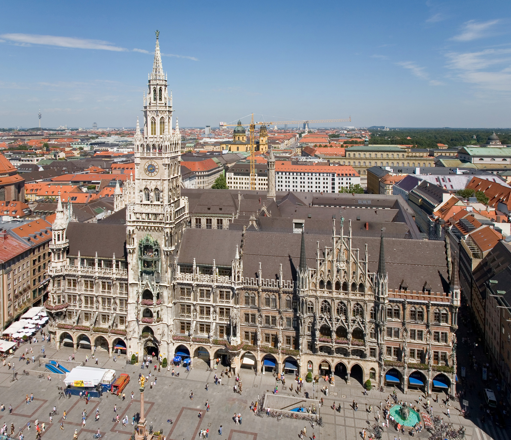
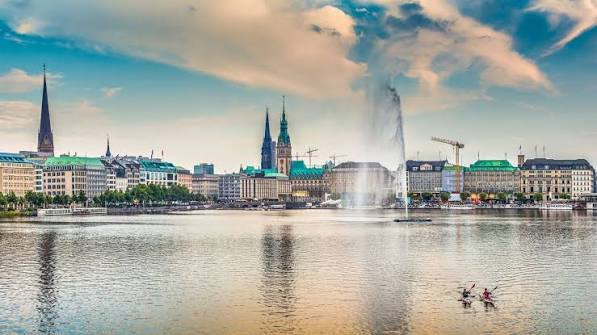
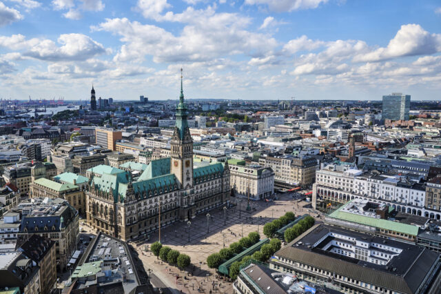
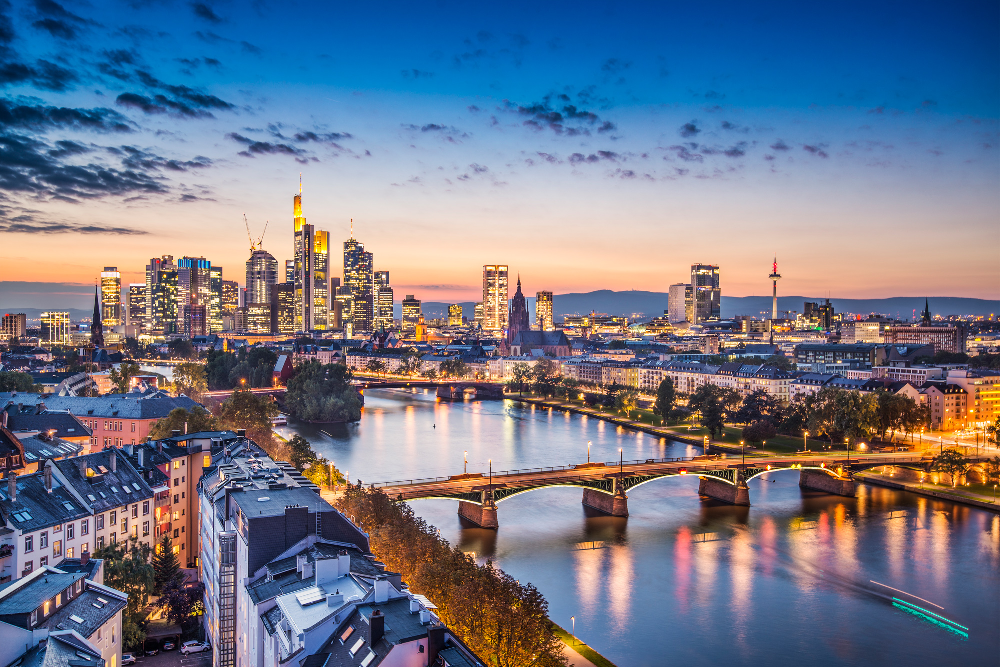
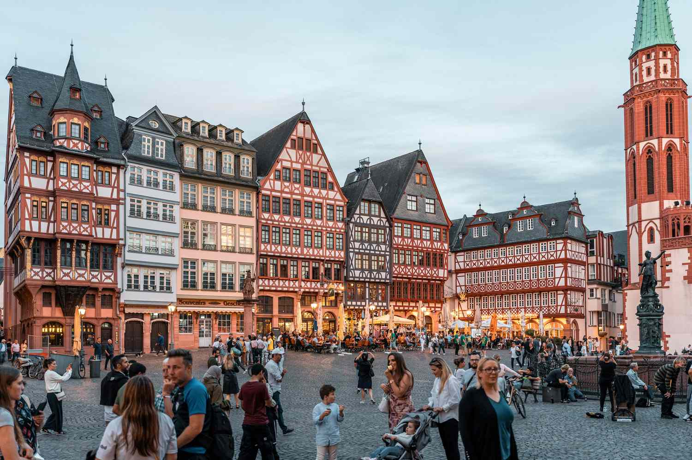
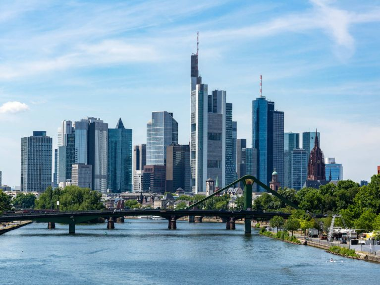
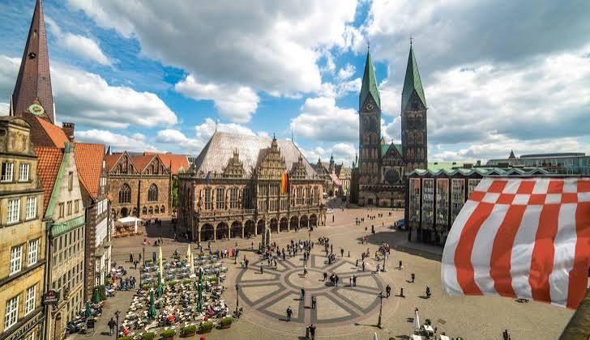
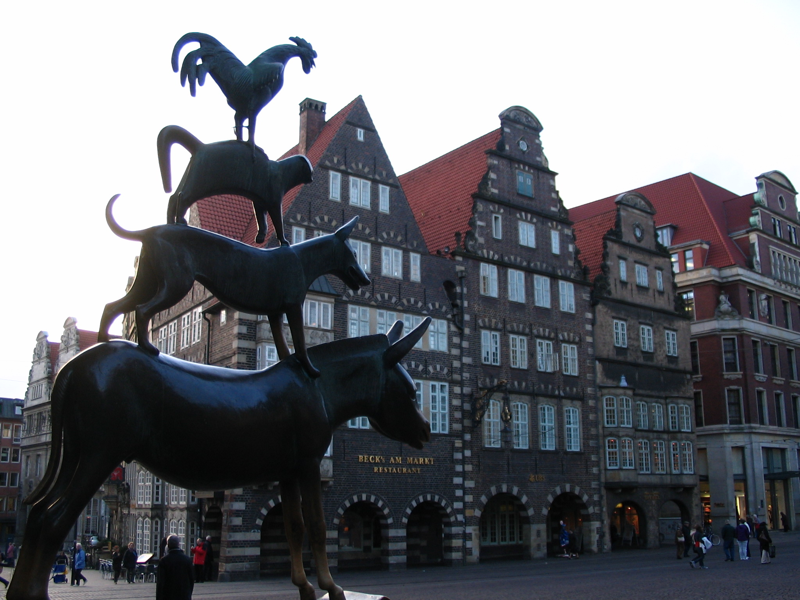
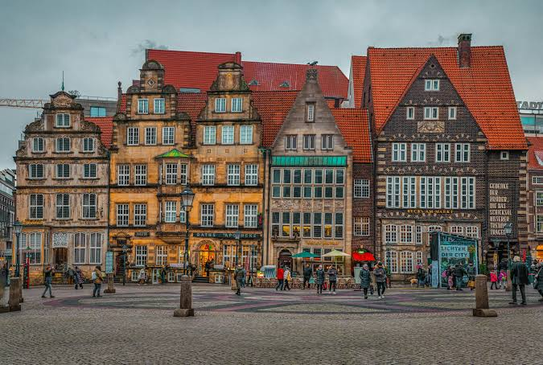

Germany Travel Guide
Discover the most beautiful cities in Germany! History, architecture, culture, and unforgettable places.
1. Berlin
Berlin is the capital of Germany and one of the most fascinating cities in Europe. It is famous for its history, museums, modern architecture, and vibrant cultural scene.
What to see: Brandenburg Gate, the Berlin Wall, and the Reichstag Building.
Official Berlin Tourism Website

2. Munich
Munich is the capital of Bavaria and one of Germany's most popular tourist destinations. The city is known for its traditional Bavarian culture, beautiful squares, historic buildings, and the famous Oktoberfest. Munich is also known for the football club Bayern Munich
What to see: Marienplatz, Nymphenburg Palace, and the English Garden.
Official Munich Tourism Website


3. Hamburg
Hamburg is Germany's second-largest city and one of Europe's most important port cities. It is famous for its canals, historic warehouses, beautiful waterfront, and lively music scene.
What to see: Speicherstadt, Elbphilharmonie, and Miniatur Wunderland.
Official Hamburg Tourism Website


4. Frankfurt am Main
Frankfurt am Main is one of Germany's most important financial centers. The city is known for its impressive skyscrapers, modern skyline, historic old town, and beautiful river views.
What to see: Römerberg, Main Tower, and the Frankfurt Cathedral.
Official Frankfurt Tourism Website


5. Bremen
Bremen is a historic city in northern Germany, famous for its medieval architecture, charming streets, and maritime history. It is also known for the famous fairy tale of the Town Musicians of Bremen.
What to see: Bremen Town Hall, the Roland Statue, and the Schnoor Quarter.
Official Bremen Website


Travel Across Germany!
Every city is unique. Choose your destination, discover new places, and create unforgettable memories.